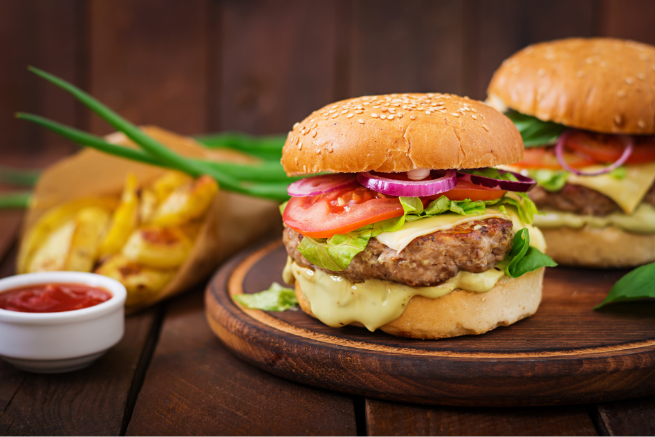
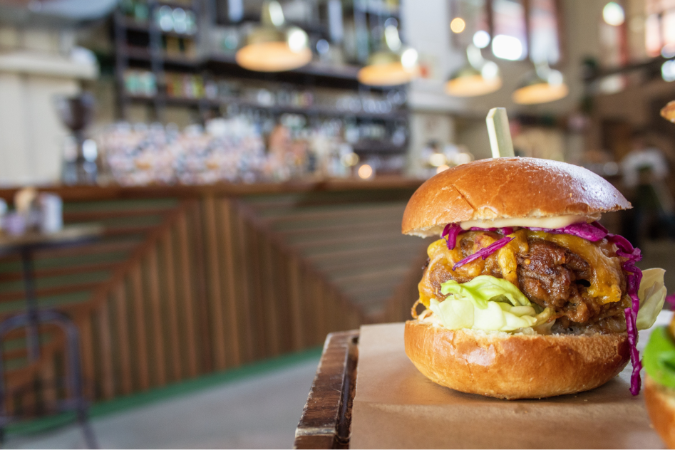
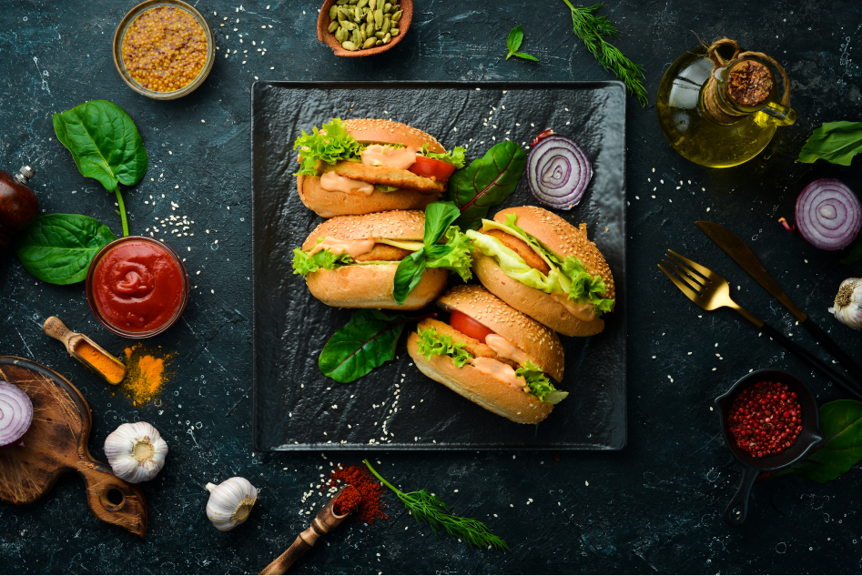
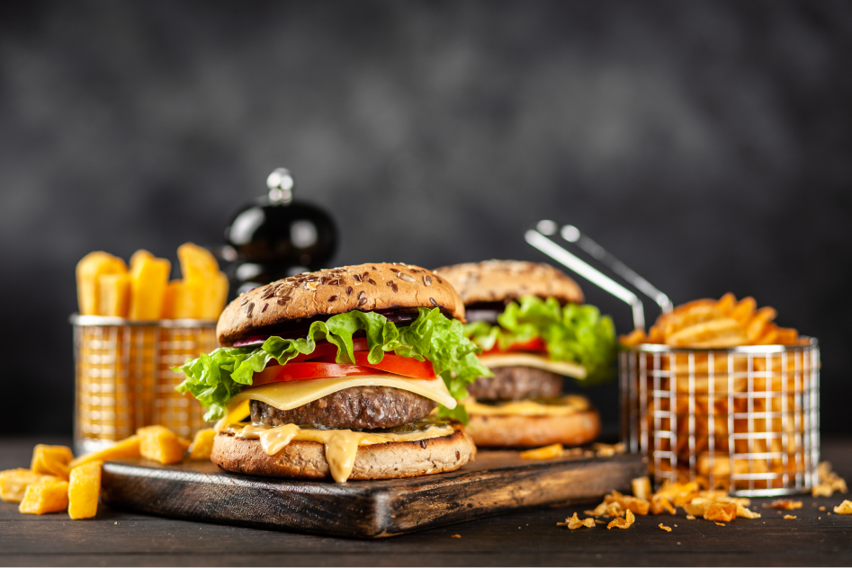

A hamburger , or simply burger, is a food consisting of fillings—usually a patty of ground meat, typically beef—placed inside a sliced bun or bread roll. hamburger s are often served with cheese, lettuce, tomato, onion, pickles, bacon, or chilis; condiments such as ketchup, mustard, mayonnaise, relish, or a "special sauce", often a variation of Thousand Island dressing; and are frequently placed on sesame seed buns. A hamburger topped with cheese is called a cheeseburger. The term burger can also be applied to the meat patty on its own, especially in the United Kingdom, where the term patty is rarely used, or the term can even refer simply to ground beef. Since the term hamburger usually implies beef, for clarity burger may be prefixed with the type of meat or meat substitute used, as in beef burger, turkey burger, bison burger, portobello burger, or veggie burger. In Australia and New Zealand, a piece of chicken breast on a bun is known as a chicken burger, which would generally not be considered to be a burger in the United States; where it would generally be called a chicken sandwich, but in Australian English and New Zealand English a sandwich requires sliced bread (not a bun), so it would not be considered a sandwich.
Etymology
back-formation, the term "burger" eventually became a self-standing word that is associated with many different types of sandwiches, similar to a (ground meat) hamburger , but made of different meats such as buffalo in the buffalo burger, venison, kangaroo, chicken, turkey, elk, lamb or fish like salmon in the salmon burger, but even with meatless sandwiches as is the case of the veggie burger.
History
Chapter 1
As versions of the meal have been served for over a century, its origin remains ambiguous.[6] The book The Art of Cookery Made Plain and Easy by Hannah Glasse included a recipe in 1758 as "Hamburgh sausage", which suggested to serve it "roasted with toasted bread under it". A similar snack was also popular in Hamburg by the name "Rundstück warm" ("bread roll warm") in 1869 or earlier,[7] and supposedly eaten by many emigrants on their way to America, but may have contained roasted beefsteak rather than Frikadeller. Hamburg steak is reported to have been served between two pieces of bread on the Hamburg America Line, which began operations in 1847. Each of these may mark the invention of the hamburger , and explain the name.
Chapter 2
There is a reference to a "Hamburg steak" as early as 1884 in the Boston Journal.[OED, under "steak"] On July 5, 1896, the Chicago Daily Tribune made a highly specific claim regarding a "hamburger sandwich" in an article about a "Sandwich Car": "A distinguished favorite, only five cents, is hamburger steak sandwich, the meat for which is kept ready in small patties and 'cooked while you wait' on the gasoline range."
Today
Chapter 1
The hamburger is considered a national dish of the United States.[65] In the United States and Canada, burgers may be classified as two main types: fast food hamburger s and individually prepared burgers made in homes and restaurants. The latter are often prepared with a variety of toppings, including lettuce, tomato, onion, and often sliced pickles (or pickle relish). French fries often accompany the burger. Cheese (usually processed cheese slices but often Cheddar, Swiss, pepper jack, or blue), either melted directly on the meat patty or crumbled on top, is generally an option.
Chapter 2
The McDonald's fast-food chain sells the Big Mac, one of the world's top selling hamburger s, with an estimated 550 million sold annually in the United States.[34] Other major fast-food chains, including Burger King (also known as Hungry Jack's in Australia), A&W, Culver's, Whataburger, Carl's Jr./Hardee's chain, Wendy's (known for their square patties), Jack in the Box, Cook Out, Harvey's, Shake Shack, In-N-Out Burger, Five Guys, Fatburger, Vera's, Burgerville, Back Yard Burgers, Lick's Homeburger, Roy Rogers, Smashburger, and Sonic also rely heavily on hamburger sales. Fuddruckers and Red Robin are hamburger chains that specialize in the mid-tier "restaurant-style" variety of hamburger s.
Chapter 3
Some restaurants offer elaborate hamburger s using expensive cuts of meat and various cheeses, toppings, and sauces. One example is the Bobby's Burger Palace chain founded by well-known chef and Food Network star Bobby Flay.
Variations
United States and Canada
Stray received "generally favorable reviews" according to review aggregator Metacritic, based on 94 reviews for PlayStation 5[46] and 39 reviews for Windows.[47] Chris Scullion of Video Games Chronicle considered it one of Annapurna Interactive's best releases,[8] and Andrew Webster of The Verge named it among the best games of the year to date.[55] VG247's Kelsey Raynor described it as "a touching tale of loss, loneliness, environmental destruction",[11] and Ars Technica's Sam Machkovech declared it a blend of the "eerie, atmospheric exploration" of Half-Life (1998) and the "childlike whimsy of a classic Studio Ghibli film".[3] Highly anticipated following its announcement,[56][57][58] the game topped Steam's wishlist charts before release;[59] it broke Annapurna Interactive's record for concurrent Steam players upon release, with over 62,000 players,[60] and became the highest user-rated game of the year on the platform.[61] Videos of cats watching footage of Stray went viral after the game's release, with the dedicated Twitter account @CatsWatchStray garnering over 32,000 followers.
France
According to a study by Gira Conseil on the consumption of hamburger in France in 2013, 75% of traditional French restaurants offer at least one hamburger on their menu and for a third of these restaurants, it has become the leader in the range of dishes, ahead of rib steaks, grills or fish.
Mexico
In Mexico, burgers (called hamburguesas) are served with ham[79] and slices of American cheese fried on top of the meat patty. The toppings include avocado, jalapeño slices, shredded lettuce, onion and tomato. The bun has mayonnaise, ketchup and mustard. Bacon may also be added, which can be fried or grilled along with the meat patty. A slice of pineapple may be added to a hamburger for a "Hawaiian hamburger ".
United Kingdom and Ireland
In Mexico, burgers (called hamburguesas) are served with ham[79] and slices of American cheese fried on top of the meat patty. The toppings include avocado, jalapeño slices, shredded lettuce, onion and tomato. The bun has mayonnaise, ketchup and mustard. Bacon may also be added, which can be fried or grilled along with the meat patty. A slice of pineapple may be added to a hamburger for a "Hawaiian hamburger ".
Australia and New Zealand
Fast food franchises sell American-style fast food hamburger s in Australia and New Zealand. The traditional Australasian hamburger s are usually bought from fish and chip shops or milk bars, rather than from chain restaurants. These traditional hamburger s are becoming less common as older-style fast food outlets decrease in number. The hamburger meat is almost always ground beef, or "mince" as it is more commonly referred to in Australia and New Zealand. They commonly include tomato, lettuce, grilled onion and meat as minimum—in this form, known in Australia as a "plain hamburger ", which often also includes a slice of beetroot—and, optionally, can include cheese, beetroot, pineapple, a fried egg and bacon. If all these optional ingredients are included, it is known in Australia as "burger with the lot".